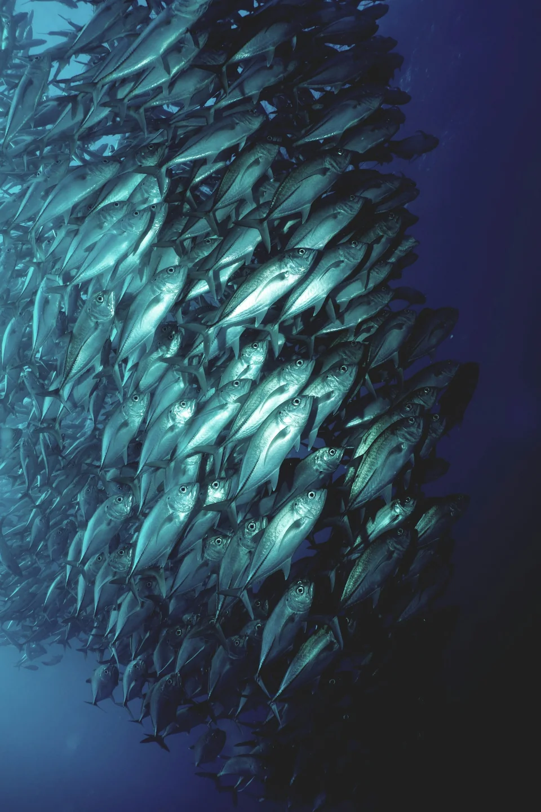
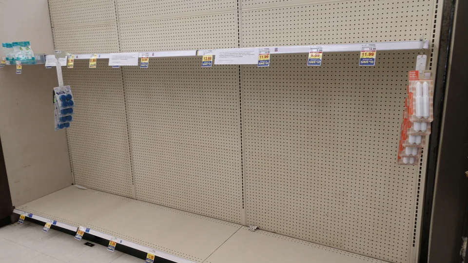
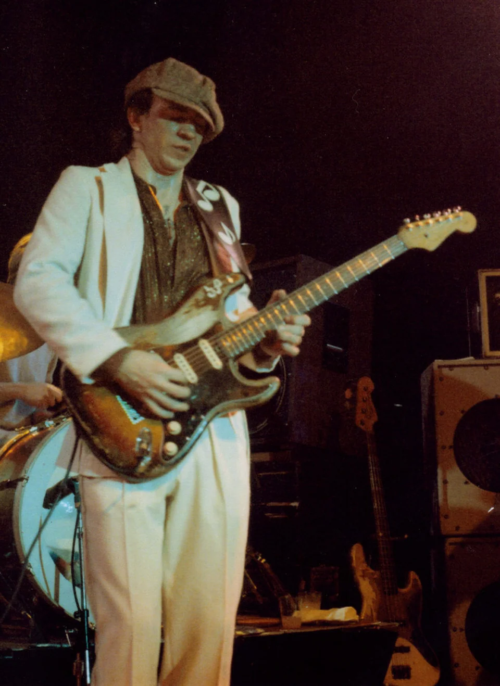
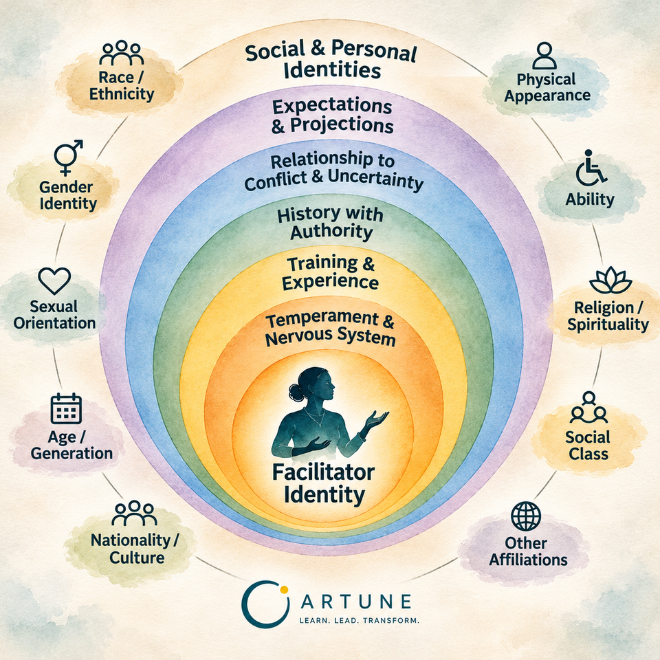
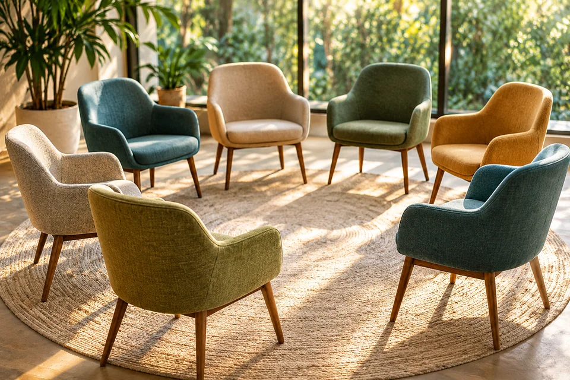

Module 01
Human Systems
Do humans flock?
Explore how patterns emerge when people interact, and why understanding group behavior requires looking beyond individuals.

Module 01
Do humans flock?
Explore how patterns emerge when people interact, and why understanding group behavior requires looking beyond individuals.

Module 02
Why did we all start buying toilet paper?
Understand how uncertainty generates anxiety and shapes collective behavior, often in ways that appear irrational or resistant.
Module 03
Can a team of experts become surprisingly ineffective?
Learn to examine the structures that shape how groups work, including boundaries, authority, roles, and their shared task.

Module 04
What if your reactions are telling you something about the group?
Learn to recognize your emotions, sensations, thoughts, and impulses as potential sources of information about the group.
Module 05
What if your first explanation is wrong?
Practice distinguishing observation from interpretation, exploring alternative explanations, and making sense of what is happening in real time.
Module 06
When is doing nothing the most useful thing you can do?
Develop the ability to choose when, how, and whether to intervene, attending to the potential effects of your actions on the group.

Module 07
What does your identity bring into the room before you say a word?
Explore how identity, experience, and social differences shape the expectations and relationships that emerge in facilitation.
From the center outward: Facilitator Identity; Temperament & Nervous System; Training & Experience; History with Authority; Relationship to Conflict & Uncertainty; Expectations & Projections; Social & Personal Identities.
Around the perimeter: Race / Ethnicity; Gender Identity; Sexual Orientation; Age / Generation; Nationality / Culture; Physical Appearance; Ability; Religion / Spirituality; Social Class; Other Affiliations.

Module 08
Can you influence a group's behavior before anyone enters the room?
Learn how boundaries, space, structure, and facilitation design shape the conditions in which group behavior emerges.
Module 09
What do you notice now that you couldn't see before?
Integrate your learning to recognize group dynamics with greater clarity and respond with increasing awareness, authenticity, and intention.
Beneath every agenda, discussion, and decision are patterns of participation, uncertainty, relationships, roles, assumptions, and emotions that shape how a group thinks, learns, and works together.
These dynamics are often difficult to see while we are participating in them. Yet they influence nearly every aspect of group life, from collaboration and creativity to conflict, learning, and decision-making.
This course is designed to help facilitators develop the capacity to notice what is emerging in groups, make sense of those patterns, and respond with greater awareness and intention.
Rather than offering formulas or techniques to apply in every situation, the course develops a way of seeing, one that integrates systems theory, systems psychodynamics, psychology, adult learning, and reflective practice.
Whether you facilitate classrooms, teams, workshops, community groups, or organizational meetings, the goal is not to become more controlling or more certain. It is to become more observant, more thoughtful, and more responsive to the group you are working with.
Over time, this lens becomes something you carry into every group you facilitate.
Group Dynamics for Facilitators
A systems-informed learning experience designed to help facilitators notice, make sense of, and respond to what emerges in groups.
This self-paced online program combines comprehensive instruction with practical application to help you deepen your facilitation practice over time. Choose Course Only or add monthly live group case consultation.
Rather than focusing on techniques alone, the course develops the judgment needed to recognize group dynamics as they unfold and respond with greater awareness, intention, and effectiveness.
Whether you facilitate classrooms, leadership teams, workshops, community groups, or organizational meetings, you'll leave with practical frameworks you can immediately apply to your own work.
Organizations
Group Dynamics for Facilitators is also available for organizations seeking to strengthen facilitation, leadership, collaboration, and group effectiveness across teams.
Whether you're supporting internal facilitators, managers, educators, consultants, or cross-functional teams, the program can be adapted for organizational learning and professional development initiatives.
If you're interested in offering this program to your team or organization, we'd be happy to discuss options for cohort enrollment, customized delivery, or facilitated learning experiences.
Interested in bringing this program to your organization?
Complimentary Initial Consultation.jpg){kind=link}